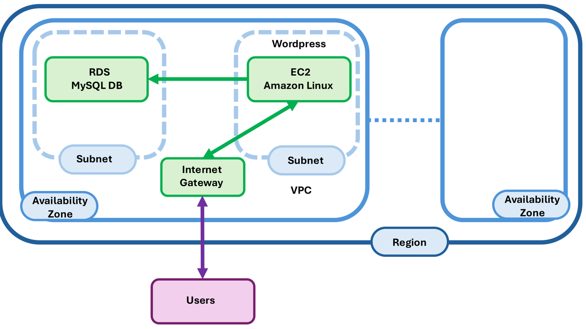

Deploying a web application
ARCHITECTURE

CONTENTS:
- Creating a Data Base with RDS
- Installing WordPress on the EC2 instance
- Cleanup
1. Creating a Data Base (DB) with RDS
AWS’ relational database service (RDS) is a very interesting option for deploying MySQL, MariaDB, PostgreSQL, Oracle, SQL Server, and Aurora databases. This service offers easy and efficient database management, as well as the ability to perform backups, scalability, and high availability.
Let’s go to the console of Amazon RDS.
In the Amazon RDS console, click on Create database
- Select mode Standard Create
- Select data base engine MySQL
- Select the data base version MySQL 8.0.44
- Select the template Sandbox
- Name of the database wordpress
- Master username admin
- Credential management: self-managed
- Set the password. Type a password for the master and confirm it.
Save the password. Leave the rest of the parameters as default. Once finished, click Create database.
Wait a few minutes until the column Status turns green and says Available.
Once the database is available, click on the database and go to the tab Connectivity & security to view the connection details.
- DB identifier:
wordpress - Hostname:
wordpress.cp66aquygfg3.us-east-1.rds.amazonaws.com - Port:
3306
- DB identifier:
To test the connection, we need a MySQL client. The easiest way is to create an EC2 instance and install the MySQL client.
5.1. Create an EC2 instance with Amazon Linux 2023:
The first step will be to go to the `EC2` dashboard. You can do this by typing `EC2` into the search bar and clicking on the `EC2` service:  Once you're on the EC2 dashboard, click on `Instances` > `Launch Instance`, as shown below:  Enter a name: **AMSA** Leave everything as it is except `Key pair name` : If you have created a private key pair (as `aws-keypair` in the figure), select it, else select `vockey` . Then click `Launch instance` 
We now have a running EC2 instance. This means we have a remote machine on AWS that we can connect to from our local computer using SSH. Let’s see how to do that.
5.2. Connect to the EC2 instance
go to the `EC2` dashboard.
Select the `EC2 instance` just created: **AMSA**
click on `Connect` , and then `Connect` again.
You will enter a terminal of the EC2 instance you created, as the user `ec2-user`, like this:

5.3. Install the MySQL client:
```bash
# Buscar el paquet a instal·lar
dnf search mysql
# Instal·lem el client mariadb
sudo dnf install mariadb105 -y
```Add a rule to the Security Group of the database to allow connections from the EC2 instance.
6.1. Go to the console of Amazon RDS
6.2. Select our database instance
6.3.In the section Connectivity & security, search for the Security Group associated with the database
6.4. Click on the Security Group to edit the rules (similar to default sg-0efc4051ab6288a2d)
6.5. Add a new inbound rule to allow connections from the IP address of our EC2 instance. Select the connection type MySQL/Aurora and enter the IP address of the EC2 instance. To do this, you need to click on Edit inbound rules and then add the following rule:
Type: MySQL/Aurora Protocol: TCP Port Range: 3306 Source: Custom Seleccionar el grup de seguretat de la instància EC2 (launch-wizard-1)Connect to the RDS database from the EC2 instance:
mysql -h hostname -u admin -p # Introdueix la contrassenya quan et demaniCreate the database wordpress and user wordpress with all permissions
CREATE DATABASE wordpress; CREATE USER 'wordpress'@'%' IDENTIFIED BY 'wordpress'; GRANT ALL PRIVILEGES ON wordpress.* TO 'wordpress'@'%'; FLUSH PRIVILEGES; exitWe already have the database ready for the WordPress installation
2. Installing WordPress on the EC2 instance
To install WordPress, a web server must be installed first (Apache):
sudo dnf install httpd -y sudo systemctl start httpd sudo systemctl enable httpd
Note that the start command start the Apache service, but it does not make it start automatically when the machine is rebooted. Therefore, we also need to run the enable command
- By default, the security group of the EC2 instance does not allow HTTP connections (port 80). You can verify this by trying to access the public IP address of the EC2 instance from a web browser. You will see that it cannot connect.
If you click the link to the public IP address, it will try to access via HTTPS, but since we don’t have an SSL certificate, it won’t work. Manually modify the URL to http://
We need to add an inbound rule to the security group to allow HTTP connections:
- Go to the console of EC2
- Select our EC2 instance
- In the section of Security, click on the Security Group associated with the instance (launch-wizard-1).
- Add a new inbound rule to allow HTTP connections:
Type: HTTP Protocol: TCP Port Range: 80 Source: Anywhere (0.0.0.0/0)
This rule will allow HTTP connections from anywhere
Once the rule has been added, we can access the public IP address of the EC2 instance from the web browser. We should see Apache’s default page
A requirement for WordPress is to have PHP installed. Let’s install PHP and the necessary extensions:
sudo dnf install php8.1 -y sudo dnf install php-curl php-zip php-gd php-soap php-intl php-mysqlnd php-pdo -yRestart the Apache service to load the PHP extensions:
sudo systemctl restart httpdNow we can install WordPress. First, we download the latest version of WordPress and save it to Apache’s default directory:
cd /tmp wget https://wordpress.org/latest.tar.gz tar -xvzf latest.tar.gz sudo mv wordpress/* /var/www/html/ sudo rm -rf wordpress latest.tar.gz sudo chown -R apache:apache /var/www/html/Access the public IP address of the EC2 instance from your web browser. You should see the WordPress installation page
Follow the steps of the WordPress installation:
- Select the language (català).
- Click on Continua
- Click on Som-hi!
- Enter the database connection details:
- Database Name:
wordpress - Username:
wordpress(previously created user) - Password:
wordpress(password created earlier) - Database Host: the RDS database endpoint (for example:
database-1.cik8jidkherq.us-east-1.rds.amazonaws.com) - Table Prefix:
wp_(default)
- Database Name:
- Click on Envia
- If everything is correct, click on Executa la instal·lació
- Enter the site title (AMSA Lab02), el nom d’usuari (francesc), the password (9T3nEBqnFqDW3uhc7S) and the email (francesc.solsona@udl.cat)
- Click on Instal·la WordPress
- Once the installation is complete, click on Inicia sessió and enter the credentials you created
3. Cleanup
Once completed, you can delete all EC2 instances and the RDS database to avoid unnecessary charges to your AWS account.